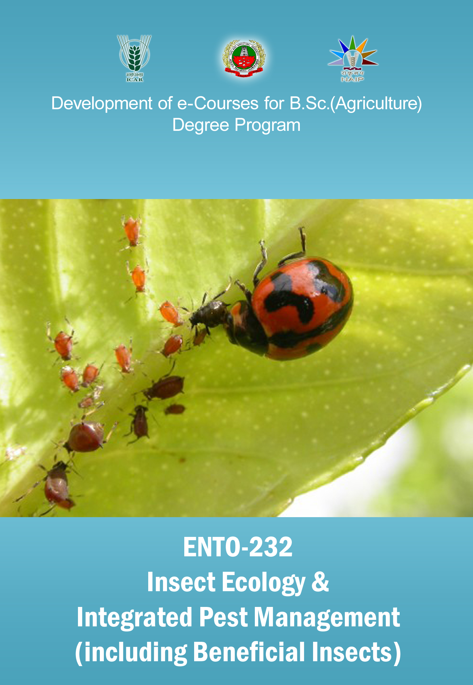

INSECT ECOLOGY & INTEGRATED PEST MANAGEMENT INCLUDING BENEFICIAL INSECTS :: (
ENTO 232
)
(2+1)

Select the lecture topic...
Lec 01 -
Principles of Applied ...
Lec 02 -
History of bee keeping ...
Lec 03 -
Apiary Management ...
Lec 04 -
Role of honey bees in ...
Lec 05 -
Bee Products ...
Lec 06 -
Effect of agricultural inputs ...
Lec 07 -
Role of pollinators weed ...
Lec 08 -
Insect ecology and ...
Lec 09 -
Population dynamics and ...
Lec 10 -
Abiotic factors on ...
Lec 11 -
Pest - definition, categories, ...
Lec 12-
Pest monitoring ...
Lec 13 -
Pest management ...
Lec 14 -
Traditional methods of ...
Lec 15 -
Legal control methods ...
Lec 16 -
Host plant resistance ...
Lec 17 -
Biological control ...
Lec 18 -
Chemical control ...
Lec 19 -
Pesticides groups...
Lec 20 -
The Insecticides Act, 1968 ...
Lec 21 -
Pheromones ...
Lec 22 -
Sterility methods ...
Lec 23 -
Insect growth regulators ...
Lec 24 -
Pesticide application...
Lec 25 -
Pesticide compatibility...
Lec 26 -
Impact of global warming ...
Lec 27 -
Integrated pest management...
Lec 28 -
Integrated pest...
Lec 29 -
IPM ...
Lec 30 -
Biotechnology in...
Syllabus